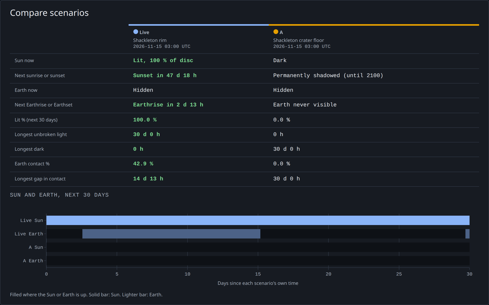
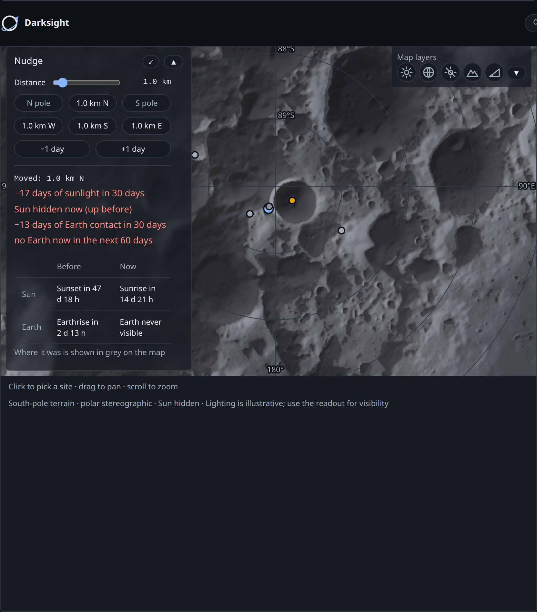
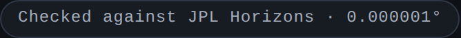
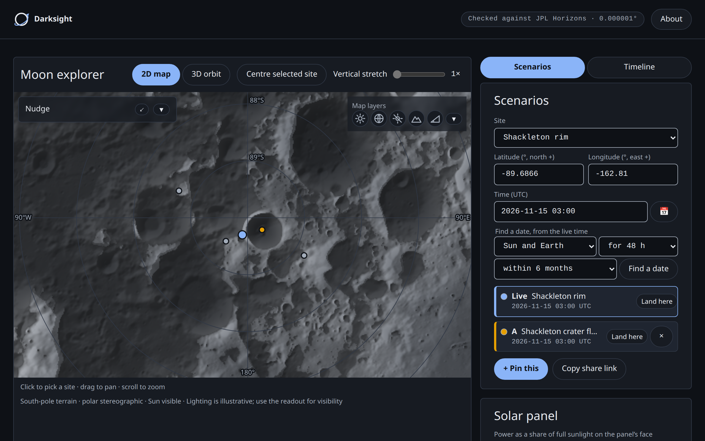
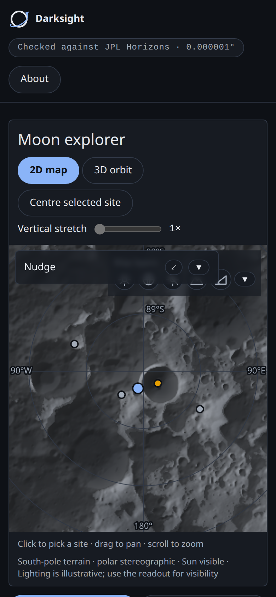

Compare lunar landing sites by sunlight and line of sight to Earth, against the real terrain.
Team GLYFT, Kuala Lumpur · Yi Hung · Leon · Yu An · Fabian · Hao Zhe
darksight.space
Power. At the south pole the Sun skims the horizon, so a ridge can hide it for days.
Radio. No direct line to Earth, no contact.
Answering it today means angles from JPL Horizons, terrain from LROC QuickMap, and a spreadsheet to line the two up.
About an hour for one site and one date, and it starts again with every change.

Pick sites and dates, pin up to three, read them side by side.
Shackleton rim against the crater floor beside it, 15 Nov 2026.
Also: countdowns to sunset and Earthset, longest dark, Earth contact, a 30-day strip per site.

of sunlight in 30 days, and no Earth in the next 60 days.
One click on N, S, E, W, +1 day or −1 day shows the change in words.
Where to land is a question of metres. Darksight shows how sensitive a site is before anyone commits to it.

largest difference in 18 cases (Sun and Earth, several sites and times). Tolerance 0.1°. Re-run by a test on every change.
LRO LOLA height map of the south pole, LOLA's whole-Moon map elsewhere; each site's skyline traced 150 km out.
JPL DE440 through Skyfield, every 3 hours. No refraction: the Moon has no air.
One table of Sun and Earth directions serves every site; the browser does the rest. No server, nothing to install.
Also in the site: a planned flight from a launch pad on Earth to touchdown at the chosen site and time.


The team wrote the code with AI coding assistants (mainly Claude Code; OpenAI Codex and ChatGPT for some parts; Gemini to fact-check sources). The idea and the design are the team's. Every task keeps a public log of what the AI generated and what a person checked (tests, reading, the browser), shown in the site's About panel.
darksight.space
github.com/glyft-nasa2026/Darksight